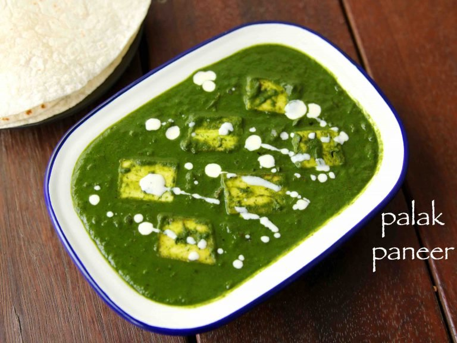

Ingredients
- 250 gm paneer
- 2 tablespoon ghee
- 3 red chilli
- 4 tablespoon minced onion
- 2 teaspoon ginger
- powdered salt as required
- 1 teaspoon kasoori methi powder
- 1/4 cup fresh cream
- 2 bunches spinach
- 1 teaspoon cumin seeds
- 1 1/2 tablespoon garlic
- 4 green chilli
- 1 teaspoon coriander powder
- 1/2 teaspoon cumin powder
- 2 tablespoon butter
- 1 dash yellow chili powder
How to make Palak Paneer
Step 1: Wash and boil the spinach for Palak Paneer
To make the paneer soft, soak it in water for some time. Cut the paneer into small cubes and keep it aside. To ensure that the spinach is adulterant-free, soak it in water and add a small pinch of salt. Then clean and wash spinach thoroughly. Now, put a deep-bottomed pan over medium flame and add spinach in it. Cover and cook until the spinach becomes soft and mushy. You need not add any water as spinach gets cooked in its own water. Once cooked, take 100 grams of spinach and chop it well in a bowl. Afterwards, puree the remaining spinach and keep it aside. (Note: You can blanch the spinach as well.)
Step 2: Cook the spinach puree with spices
Now, put a pan over medium flame and melt ghee in it. Add cumin seeds in it along with halved whole red chilli. Let them temper for a few seconds and then add garlic, onion, green chilli, ginger. Saute well and then add coriander powder, cumin powder, kasoori methi powder and salt. Mix well and cook for 2 minutes. Finally, add cream and pureed spinach and cook for 2-3 minutes.
Step 3: Cook paneer in this spinach gravy and serve hot
Finally, add cubed paneer in it and gently mix well. Cook for 2 minutes and then add butter in it along with fresh cream, and yellow chilli powder. Cook for another minute and garnish with fresh cream, butter and coriander leaves. Serve hot with Missi Roti or Makki Ki Roti.
